|
|
Cellular Automata Laboratory |
|
WebCA is a comprehensive simulator for one- and two-dimensional cellular automata which runs within a Web page, using the features of HTML5 and the JavaScript language. It requires a modern Web browser which supports these features. You may wish to launch WebCA in another browser window to experiment with it as you read this chapter.
If you haven't watched the WebCA demo yet, please do so before reading any further. Watching the demo is like watching a series of selected short subjects at the movies, but what you see are not movies. In computer graphics terminology, a “movie” is a sequence of pictures which have been saved one by one in the computer memory, and then displayed in rapid succession—like a slideshow. But when you watch the WebCA demo you see a festival of one-act computer “plays,” where a “play” is something that is happening right now in real time inside your machine. Live action that you can reach into and alter.
Even to call our little vignettes “plays” is a bit misleading. Traditionally, a play has a script which specifies everything that will happen. But when you invent a cellular automaton rule you do not know, in any very detailed sense, what is going to happen. The demos may be plays, but they do not have scripts. No, the way we specify a demo is simply by describing i) Cast, ii) Scenery, and iii) Lighting.
The cast of a WebCA play really has but one character. You might call him/her EveryCell. EveryCell's personality this time around is specified by a rule program which is used to describe in a general way how EveryCell will behave. The rule program is written in JavaScript or Java, and when this program is run (only once, normally) it creates a permanent rule table. The rule table is a lookup table which specifies in exhaustive detail how EveryCell will react to every possible specific situation.
How many situations can EveryCell distinguish? EveryCell has 8 bits of personal state (memories, predilections, outside noise), and EveryCell can see one bit of each of his/her eight neighbors. So an EveryCell situation consists of 16 bits: 8 bits of personal state and 8 bits of neighborhood information. Each bit can be either 0 or 1, so this means that there are 216 = (26) × (210) = 64K situations. (Never forget that 210 is around a thousand—1024 exactly, but close enough to a thousand to be called “K” for “kilo”.)
So I can specify EveryCell's personality in wrackingly omniscient
detail by listing a long table which gives the value of a variable
as a function of EveryCell's personal eight-bit
“oldstate” and of the eight neighborhood bits—one bit from each
neighbor—which EveryCell can see. Why can't EveryCell see all eight
bits of each neighbor? Hey, dude, get real. How much do you know about
your neighbors?

So the lookup table can be thought of as having 64K lines something like the following:
| oldstate | NW | N | NE | E | SE | S | SW | W | newstate |
|---|---|---|---|---|---|---|---|---|---|
| 00000000 | 0 | 0 | 0 | 0 | 0 | 0 | 0 | 0 | 00000000 |
| ⋮ | |||||||||
| 00000000 | 0 | 0 | 0 | 0 | 0 | 1 | 1 | 1 | 00000001 |
| ⋮ | |||||||||
| 10000010 | 1 | 0 | 0 | 1 | 0 | 1 | 0 | 1 | 10000111 |
| ⋮ | |||||||||
| 11111111 | 1 | 1 | 1 | 1 | 1 | 1 | 1 | 1 | 00001111 |
As the index lines are always the same, all that the lookup table really needs to store is the newstate value. Compiled rules stored in .jc files are compressed and often much smaller than the full 64K lookup table.
Some of the rules are capable of self-organizing an interesting configuration from a random start. They build their own scenery. VoteDNA, Brain, and Hodge are rules like this. Other rules will only look interesting if their starting pattern is something simple, like a square or a line drawing. They need a prop to work with. FredMem, TimeTun, and HeatWave are mildly demanding rules like this. Still other rules are primadonnas that need very special scenery to work right. The Perfume rules and the Den… rules are examples of this; in these rules, the starting scene has random particles to act like gas molecules, and fixed shapes to act like walls or objects. An invisible aspect of the starting Perfume pattern is that a checkerboard pattern is loaded into bits #4 and #5.
WebCA comes with a diverse selection of start patterns that you can load directly. You can also create your own customized start patterns by drawing them with a paint or image processing program and converting them to WebCA pattern files with tools you can download and run on your computer.
The WebCA map contains 320×200 cells which, to be easier to see, are zoomed out into a screen of 640×400 pixels, with one byte (eight bits) of state information per pixel, so a .jcp pattern file codes up 64,000 bytes of information (about the same amount as a 64K .jc ruletable). WebCA uses data compression to reduce the size of the files where possible; faderegg.jcp needs only 23 bytes and tim.jcp takes 23,457.
You can see a list of the available pattern files in the the drop down list in the Pattern Selection part of the control panel.
Aside from the pattern part of the “scenery,” WebCA also lets you set the topology. In particular, you can turn screenwrap on and off. In wrap mode, a pattern which moves off the screen's right will come back on the screen's left. WebCA refers to wrap mode as “torus screen” because a torus is a doughnut shape, and if you were to actually paste the screen's left side to its right side and its top side to its bottom side you would get an inner-tube torus shape. WebCA calls the nowrap mode “open” or “plane” screen because when there is no wrap and the edges are set to zero, it is as if the screen is a patch in an endless surrounding plane of blank cells. There are also some one dimensional topologies, where the “torus” and “plane” become the “ring” and the “line.”
Each pixel's color corresponds to the current state of the cell it stands for. Watching the patterns go by, you are comprehending the behavior of a system with 64,000 independent elements. Although cellular automata do not absolutely need to be presented as graphics displays, this method takes advantage of human vision's excellent pattern-recognition abilities. Choosing the right lighting, or color palette, can bring out different structures and details of a rule. The process is akin to staining a slide to be looked at through a microscope.
EveryCell can have any state value from 0 to 255, and you can select any color you like for each of the 256 states. Colors are defined by their red, green, and blue (RGB) intensities in the range from 0 to 255.
WebCA has color palette files with extension .jcc. You can create your own color palette files with a text editor, using one of the existing files as a pattern.
Color palette files are saved in a 7K readable ASCII format or in an incomprehensible compressed binary 700 byte format. To save download time, all our .jcc files are compressed binary. To reconstitute one of them, use the “Dump” button in the Color Palette Selection section of the control panel to write it to the Dump box in ASCII format. You can then copy and paste it into your text editor and modify it as you wish.
The default color palette default.jcc, which is used if nothing different is requested, looks like this:
5 ; R G B
0 0 0 ; 0
0 255 0 ; 1
0 0 255 ; 2
255 0 0 ; 3
255 255 0 ; 4
0 255 255 ; 5
255 0 255 ; 6
255 255 255 ; 7
⋮ ⋮ ⋮ ⋮
255 0 16 ; 253
255 0 12 ; 254
255 0 4 ; 255
Each row of a .jcc file represents the color for one state. The first three columns show the intensity of Red, Green, and Blue to use. Anything to the right of a semicolon is a comment, which WebCA ignores. The initial “5” of default.jcc means that this file is in ASCII format and uses RGB intensities from 0 to 255.
One of the key uses of color palette files is to make a particular rule's “bookkeeping” bits invisible. For instance, in a rule which uses some of the bits to keep track of which cycle it is in, you want to make sure that the alternation of the cycle bits is “invisible.” If, for example, your bit #7 alternates between 0 and 1 to tell EveryCell which cycle it is in, then you want to have a color palette whose top half (states 128–255) is a copy of its bottom half (states 0–127), so that a cell's color is unaffected by whether or not its bit #7 is 0 or 1.
More creative uses of color palettes are also possible, particularly in connection with rules such as Faders or Rug, which cycle through many states.
At the top of the WebCA page is the display which shows the state map. Each cell is displayed by looking up its state in the current color palette and displaying the red, green, and blue (RGB) intensities given by the palette. For two-dimensional world types, each cell is represented by a dot in the map display. For one-dimensional world types, the current state of the automaton is displayed in the top line, with subsequent lines showing the history of earlier generations.
For closed world types, the map logically wraps around at the edges: left to right and top to bottom for two-dimensional rules and left to right for one-dimensional rules. For open world types, the map is considered surrounded by an infinite sea of cells in state zero.
When the mouse cursor is within the map, you can use the arrow keys to scroll the map up, down, left, and right. Each press of an arrow key scrolls the map by one cell, or ten cells if the Shift key is depressed. For closed world types, the map wraps around as you scroll; for open world types, zero cells are shifted in and cells shifted off the edge are lost.
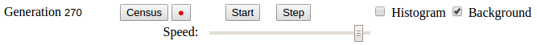
Below the map are a set of buttons which control the operation of the simulator. The “Start” button starts the simulation. While the simulation is running, the legend of the button changes to “Pause”, and pressing it will stop the simulation. The “Step” button runs one generation of the simulation every time it is pressed. If pressed while a simulation is running, it stops the simulation.
At the left, a generation counter advances for each generation of the simulation. Clicking the “Generation” label resets the counter to zero. The generation number is a text field: you can click to edit it and set it to any value you wish. To the right of the generation counter are two buttons which control population census taking. The “Census” buttton displays the Population Census dialogue, while the red dot is a “record” button which adds a snapshot of the current population to the census. The population census facility will be discussed in more detail below.
To the right, two checkboxes control the display of histograms of cell states. When checked, the “Histogram” box causes the map display to be replaced by a histogram of cell states with bars representing the colors of the cells according to the palette. If “Background” is checked, cells which map to black and states which have no cell in them are included in the histogram; otherwise they are not plotted. When “Background” is checked, cells which map to black are plotteed as a dark gray bar in the histogram.
Below these controls is a slider which controls the speed at which the simulator runs. You can set the speed between two and two hundred generations per second. Depending upon the speed of your computer, the efficiency of your browser's implementation of JavaScript, and the complexity of the user evaluator (if any) used by the rule, the actual maximum speed may be less than 200 generations a second. Pressing Ctrl+b while the mouse cursor is in the map and the simulator is running will display an alert telling you how many generations per second you are actually getting.
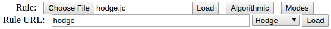
WebCA provides two means to define the rules which cells in the automaton obey. You can define a rule in a Java program which, when run, produces a compiled rule file with a file type of .jc, or as a JavaScript program which is loaded directly into the WebCA page. This section is for loading compiled rules; for JavaScript rules, see the Rule Program section below.
You can load a compiled rule either from a file on your own computer or from the library of rules provided by the WebCA server. The first line provides a file selection box that allows you to select a .jc file and load it with the “Load” button. The “Algorithmic” button displays the Algorithmic Rules dialogue, which allows you to specify a rule from a number of families of rules. This will be described in the Dialogues section. The “Modes” button displays the Rule Modes dialogue, which allows you to inspect or change the modes selected by the rule (for example, you may wish to change the world type from wrapped to open).
The next line allows you to load a compiled rule from the WebCA server, either by entering its name in the Rule URL field and pressing the “Load” button, or by selecting a frequently-used rule from the drop-down list. Unfortunately, JavaScript security restrictions prohibit loading URLs from a site other than that from which the page was loaded, so rule URLs always default to the site hosting WebCA.
A rule file may specify the loading of a pattern, color palette, and/or user evaluator. If the rule makes such requests, the items will be loaded from the WebCA server via URL and their names entered in the corresponding URL boxes. You can override these requests (for example, loading a different pattern to feed it to a rule) by loading the desired item after you load the rule.
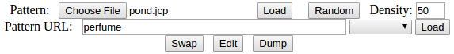
A pattern specifies the initial state of cells in the map: the starting point for the first generation. A pattern is specified in a .jcp file. Each pattern specifies the state of all cells in the map, usually with compression to save space and reduce download time. You can choose from a selection of standard patterns provided by WebCA, or draw your own using a paint program and then convert to a .jcp file with one of the tools available on the WebCA site.
As with compiled rules, you can load patterns from files on your computer, or via URL from the WebCA server. Frequently-used patterns can be selected from a drop-down list. The “Random” button creates a random pattern in plane #0 with the percentage of one bits given by the “Density” box.
The final line of the pattern section contains three buttons which act on the current pattern. “Swap” swaps bit planes #0 amd #1. This is a common way to invert the direction of simple reversible rules, so this button is provided as a shortcut to avoid having to resort to the Bit Plane Editor dialogue. That dialogue is displayed by the “Edit” button; it is described in the Dialogues section below. The “Dump” button dumps the pattern into the Dump box at the bottom of the page (which is hidden until you use it the first time) in uncompressed ASCII format where each cell in the map is written as a hexadecimal number giving its state, You can copy a pattern dump to the clipboard, paste it into a text editor, then save it as a .jcp file which can be subsequently loaded into WebCA.
Some patterns only make sense when displayed with a color palette expressly designed for them (for example, Fullearth and Openplan). In such cases, we usually give the pattern and palette the same name.
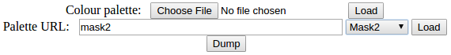
A color palette specifies the colors used to display cells in the map. A cell's state is a number from 0 to 255, so there are 256 entries in a palette. Often multiple states will map to the same color, which has the effect of preventing housekeeping bits from imterfering with the interesting information in the cells. A palette is usually specified by an ASCII file with one line per state, as described in the File Formats chapter. A palette file is given an extension of .jcc, and as with rules and patterns, can be loaded either from a local file or via a URL from the WebCA server. A drop-down list provides access to commonly-used patterns.
The “Dump” button writes the current palette into the Dump box at the bottom of the WebCA page. You can select the contents of the box, copy it to a text editor, make any changes you wish, and save it as a .jcc file, which can be loaded into WebCA.
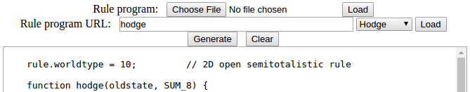
The easiest way to define rules is to write a rule program in JavaScript. Unlike Java compiled rules, there's no need to install a Java development environment on your computer—you just write the JavaScript program with a text editor, copy and paste it into the Rule Program box, press “Generate”, and you're ready to run. You can make changes to the program in the text box, re-generate, and immediately run. (If you make changes to a rule program and wish to save them, be sure to copy the contents of text box and paste it back into your text editor. Due to security restrictions, JavaScript cannot directly save to files on your computer.)
You can also load rule programs from local files or via URL from the WebCA server. These rule programs are loaded into the Rule Program text box, replacing any previous content, and automatically generated. The “Clear” button clears the box.
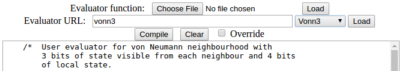
A user evaluator is a JavaScript function which replaces the inner loop which WebCA uses to update every cell in the map for each generation. Please see the User Evaluators chapter for details on what you can accomplish with user evaluators and how you go about writing one. User evaluators are loaded by pasting into the the text box, loading a local file (which, as a JavaScript program, has a file type of .js}, or from a URL on the WebCA server.
After pasting an evaluator into the Evaluator text box, or modifying the evaluator in the box, press the “Compile” button to install it. If the rule requests a different evaluator, you can force it to use yours instead by checking the “Override“ box. Evaluators loaded from a file or URL are automatically compiled. The “Clear” button erases any content of the Evaluator box.
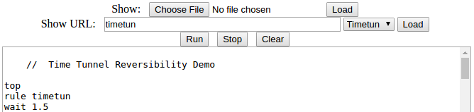
A WebCA show is a sequence of commands which, executed automatically, performs a scripted demonstration of the program. Show commands can load rules, patterns, palettes; run the simulator; change its modes; present messages to the audience; and other functions. Please see the “Defining Shows” section for details.
As you've probably guessed by now, shows can be loaded from a file on your computer, a URL on the server, or by pasting the show into the text box. A drop-down list of common shows is available. Press the “Run” button to start the show and “Stop” to halt a running show. For convenience, while a show is running the “Start/Pause” button below the map changes to a “Stop” button which lets you halt the show without scrolling down to the Show section of the page. The “Clear” button clears any content in the Show box.
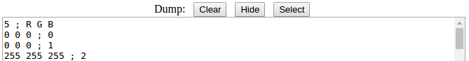
To prevent malicious Web pages from modifying files on your computer, JavaScript is prohibited from writing files to the system running the browser. As a consequence, when WebCA wants to give you the opportunity to save something locally, it has to accomplish this through a roundabout process: write the output to the Dump box at the bottom of the page, whence you can select it, copy it to the clipboard, paste it into a text editor, and finally save it to a file on your machine.
The Dump section of the page is hidden until a command writes something to it, which will cause it to appear. The “Hide” button will send it back into hiding until something else writes to it. All commands which use the Dump box append to the end, preserving any existing content. You can use the “Clear” button to remove existing content before adding something new. The “Select” button selects the contents of the Dump box, ready to copy to the clipboard. (Once again, you're forced to do this yourself because, for security reasons, JavaScript is blocked from directly accessing the clipboard.)
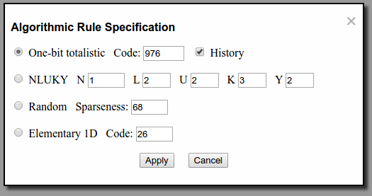
The Algorithmic Rule Specification dialogue is displayed by the “Algorithmic” button in the Rule Selection section. It allows you to specify rules from four families by entering a code number, without the need to write a rule definition. You have the following options.
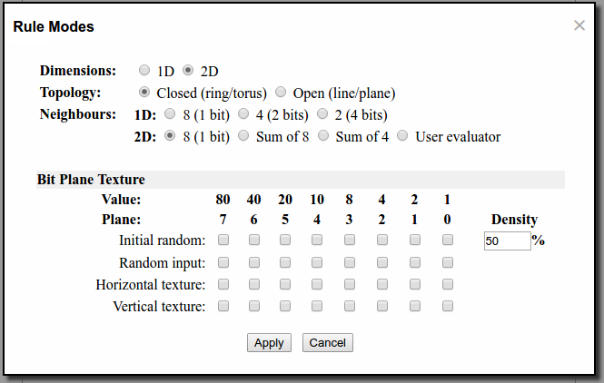
Rule modes specify the number of dimensions (one or two dimensional), the topology (open or closed), the number of neighbors seen by each cell and how many bits of state can be seen, and optional inputs to the rule specifying horizontal and vertical textures and random input. These modes are usually set in the the rule definition program; see that chapter for details. The Rule Modes dialogue, displayed by the “Modes” button, allows you to examine, and optionally change, the modes chosen by the rule. This is most useful when you want to change between open and closed modes for the map. Most other changes to modes for which the rule wasn't intended will produce nonsense results, but you can't damage anything, so go wild—you might discover something wonderful.
A rule program can request various kinds of Texture to be loaded into the map and/or fed to the rule as it is running. The Rule Modes dialogue allows you to view and modify the texture requested by the rule. (Often changing the texture to something other than what the rule expects will produce useless results, but it can't do any harm and there are circumstances where, in conjunction with a rule designed with varying texture in mind, it can be valuable.) There are four kinds of texture which can be applied to fields of contiguous bits indicated by check marks in the various plane columns. Note that each field must consist of contiguous bits; if you check two or more boxes with an unchecked box inbetween, you'll receive an error message when you press “Apply” and your texture request will not be accepted.
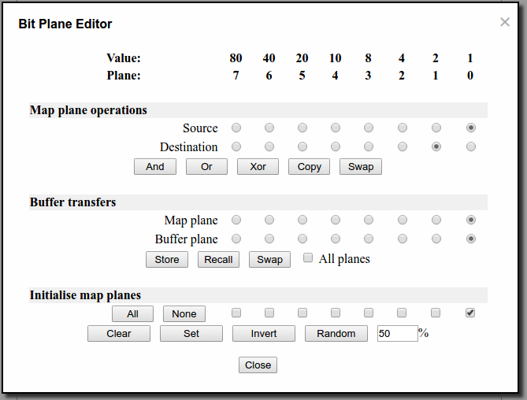
This somewhat intimidating dialogue is displayed by pressing the “Edit” button in the Pattern section of the control panel. It allows you to perform various operations on individual or selected sets of bit planes. At the top are column titles identifying the eight bit planes and giving the value of each in hexadecimal. The check boxes in the three areas below select the bit plane corresponding to the label at the top of the column. The three sets of selection and action buttons perform various manipulations on the bit planes and are discussed individually.
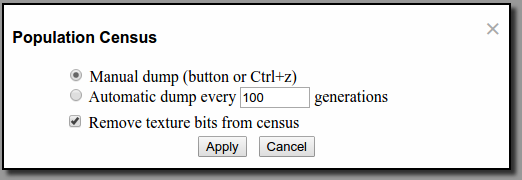
A population census consists of a series of ASCII records, in comma-separated value format, each of which consists of the generation number at which the census was taken followed by pairs giving a cell's state and the number of cells which were in that state at the given generation. States in which no cells in them are omitted. You can snapshot the population census at any time by pressing Ctrl+z while the mouse cursor is in the map display or by pressing the “red dot” button below the map. The dialogue allows you to configure an automatic dump after each number of generations you specify. Many rules employ “texture” in the map to indicate horizontal and vertical position or random stimulus. If these bits are included in the census, the results require post-processing to remove them and count the states in which you're interested. If “Remove texture bits from census” is checked, texture requested by a rule will automatically be removed and cells with identical state in non-texture bits consolidated. This applies only to texture requested by a rule definition; if your rule uses other “housekeeping” bits in which you aren't interested, you'll still have to remove them while processing the census results.
Population census records are appended to the Dump box. You can save them to a file on your computer by copying them from the Dump box to a text editor, then saving the file. The population census is particularly handy when verifying that a rule which is intended to conserve particles actually does.
Here are population census records made while running the Brain rule for 400 generations with automatic census every 100 generations enabled.
0,0,31893,1,32107 100,0,60314,1,1863,2,1823 200,0,60808,1,1623,2,1569 300,0,59857,1,2062,2,2081 400,0,60625,1,1696,2,1679
A Show is a scripted set of commands which WebCA executes, allowing you to construct demonstrations which run without user interaction. The show commands are listed below. Blank lines or lines which begin with “//” are ignored and may be used for comments.
- banner time
- A pop-up banner is displayed for time seconds. The banner includes whatever HTML follows the banner statement, terminated by a line which contains just “--”. If time is 0, the banner will be displayed until dismissed by the user.
- cell [op]v col row
- Set the cell at position (col,row) in the map to value v. If v is preceded by one of the characters “&”, “|”, or “^” the cell will be replaced by its the result of the corresponding bitwise logical operation between v and its current state.
- evaluator [url [override]]
- The user evaluator given by url is loaded and compiled. If “override” is specified, the Override box will be checked. A blank evaluator command cancels any currently-specified evaluator.
- generation n
- The generation counter is set to n.
- palette url
- The color palette from url is loaded.
- patch (rule[prog]|eval[uator]) /regex/ "replacement"
- Sometimes in a show you may wish to change parameters defined within a rule program or evaluator which are normally set by the user editing the code before starting the simulation. The patch command modifies the currently loaded ruleprog or evaluator (both of which may be abbreviated to four characters), replacing the text which matches the regular expression regex with the specified replacement. The rule program or evaluator is automatically re-generated or re-compiled after the patch is applied. The usual JavaScript rules for quoting slashes within regular expressions and quotes within strings apply.
- pattern url
- The pattern from url is loaded.
- plane mask clear/set/invert/random [n%]
- The bit planes specified by one bits in the hexadecimal mask are modified according to the following operation: clear (set to 0), set (set to 1), invert (set ones to zeroes, zeroes to ones), and random (set bits to random values; if a number follows random, that percentage (0–100) of the bits will be ones, with a default of 50% if no number is given).
- random density
- Bit plane 0 is set to random bits with a density (0–100) percent of one bits. Planes 1–7 are cleared to zeroes. You can accomplish this with plane commands, but it's such a common operation random is provided for convenience.
- rule url
- Load a compiled (.jc file) rule from url. Note that a rule may request the loading of a pattern, color palette, and/or evaluator. If you wish to override the rule's selection, follow the rule command with commands to load those you prefer.
- ruleprog url
- Load a JavaScript (.js file) rule program from url and generates it. Note that a rule program may request the loading of a pattern, color palette, and/or evaluator. If you wish to override the rule's selection, follow the ruleprog command with commands to load those you prefer.
- run [=+−*/]generations
- Run the simulator for the specified number of generations. If generations is preceded by an operator, it behaves as follows:
The generations argument can be a floating point number; the result is rounded to an integer number of steps. If no argument is given, the most recent default will be used.= Set the default number of generations for subsequent run commands.
+ Run for the previous default plus generations
− Run for the previous default minus generations
* Run for the previous default times generations
/ Run for the previous default divided by generations- speed gensec
- Set the speed the simulator runs, in generations per second, to gensec, a value between 2 and 200. The actual maximum speed the simulator runs may be limited by the speed of your computer and the complexity of the evaluator used by a rule.
- stop
- Stops the show and returns control to the user. Any lines after the stop are ignored. Running off the end of the show will also stop it; this command is a convenience for when you're developing a long show and want it to halt after a particular step.
- swap plane1 plane2
- Interchange the contents of bit planes plane1 and plane2 (0–7) in the map. This is commonly used when changing the direction of reversible rules.
- top
- Scroll to the top of the WebCA page. This is handy at the start of a show to guarantee that the map display is visible after the show starts.
- wait seconds
- Pause the show for the specified number of seconds.
The URL with which WebCA is invoked allows you to append a query string to preload items and set parameters. This can be used to create links which open ready-to-run demonstrations which require no user interaction other than pressing the “Start” button. The query is appended to the URL after a question mark as a series of commands and arguments, separated by ampersands, for example:
http://www.fourmilab.ch/cellab/webca/?rule=hodge&palette=bleach
The following query commands are available.
- ruleprog=url
- Load the JavaScript rule definition from url. Note that the rule program may automatically load a pattern, palette, and/or evaluator. If you want to override these default selections, follow the rule query by queries that load the desired items.
- rule=url
- Load the compiled rule from url. Note that the rule may automatically load a pattern, palette, and/or evaluator. If you want to override these default selections, follow the rule query by queries that load the desired items.
- pattern=url
- Load the pattern from the named url. You can abbreviate the command to “pat”.
- palette=url
- Load the color palette from the named url. You can abbreviate the command to “pal”.
- evaluator=url
- Load the JavaScript evaluator from the named url. You can abbreviate the command to “eval”.
- show=url
- Load and run the show from the named url.
- speed=gensec
- Set the simulation speed to gensec generations per second, in the range 2 to 200. The maximum speed may be limited by the speed of your computer and the complexity of the evaluator used by the rule.